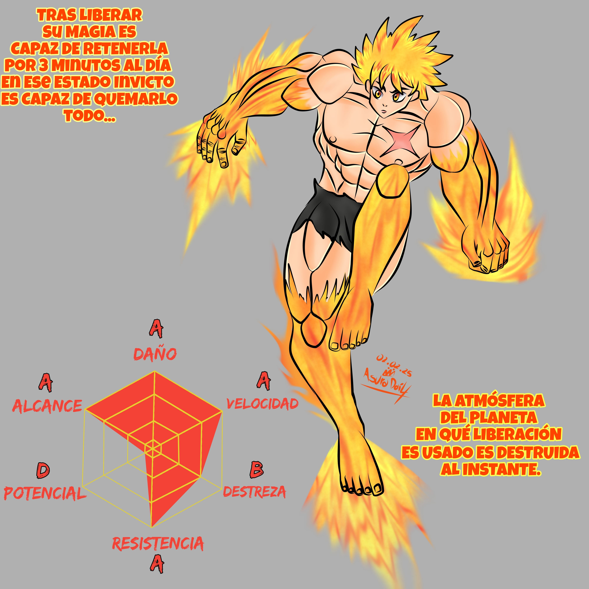

.jpeg)

Reconocido como el “último sobreviviente de los que luchan sin armas”, su poder mágico es el fuego que lo quema todo. Su
entrenamiento aceleró su crecimiento y desapareció su libido.
Tras la muerte de su madre permaneció en el planeta sin leyes
desafiando a los usuarios mágicos más fuertes. Lo que más le
gusta son los combates a muerte, recorrió el camino del
guerrero en un año y medio además que pertenece al grupo
que derrotó al temible Hecatonquiro, su poder mágico le
convierte en el poseedor del ataque más fuerte. Sin embargo las propiedades de su magia le impiden recibir potenciadores o apoyos por parte de aliados.
La razón por la que muchos usan armas con filo habiendo
armas de fuego es que los objetos punzocortantes mágicos
son capaces de rasgar el “Blind” de los usuarios mágicos
sin necesidad de quebrarlo por lo que son una buena opción a
la hora de enfrentarlos.
El Blind es en esencia una habilidad básica de cualquier
Usuario mágico que cubre a su usuario de cualquier maldición
o debuff hasta ser destruido con un ataque contundente o
múltiples ataques mágicos, el Blind se restablece naturalmente
dependiendo de la habilidad del usuario el tiempo de reparación
puede variar. (En Invicto el tiempo de reparación total de su Blind es
de 0.5 segundos).